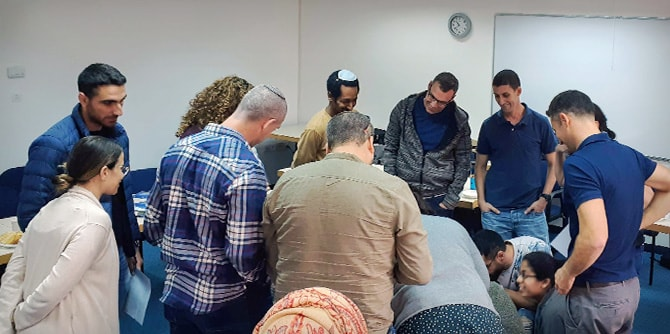

The Mandel IDF Educational Leadership Program, which is conducted in cooperation with the IDF Education and Youth Corps, opened on October 29, 2018, with a session attended by the IDF Chief Education Officer,
Brigadier General Zvikah Fayirizen. The event was also attended by Colonel Laura Ben-Hemo, head of the education department of the Education and Youth Corps; senior officers of the Corps; and the faculty of the program, who welcomed the fellows of Cohort 13: officers and non-commissioned officers who are educational leaders in their respective units, and were selected to participate in the program.
In his opening remarks, Brigadier General Fayirizen highlighted the importance of educational activity in the IDF, and spoke about the great responsibility borne by IDF commanders – as commanders in the people's army of the State of Israel – when they engage in education. He wished the participants a rewarding and enriching learning experience, and thanked the faculty and leadership of the program for the fruitful cooperation between the Mandel Foundation–Israel and the IDF and its Education and Youth Corps over the years. He also praised
Mr. Morton Mandel for his personal dedication and contribution to the IDF, Israeli society, and the State of Israel.

Opening exercise: Soldiers compose a sentence that expresses the expectations of all members of the group
The Mandel IDF Educational Leadership Program was founded in collaboration with the IDF Education and Youth Corps in 2005. Its goal is to assist IDF officers in developing their identities as “educators in uniform,” and to broaden their knowledge, perceptions, and practices in the field of education. Participants come from a variety of positions and corps, and include education officers, human resources officers, and commanders from the Ground Forces, Air Force, Navy, Technology and Telecommunications Corps, and the Military Intelligence Directorate. The program is directed by
Lior Peri, and is under the direct supervision of the director general of the Mandel Foundation–Israel.
{kind=link}